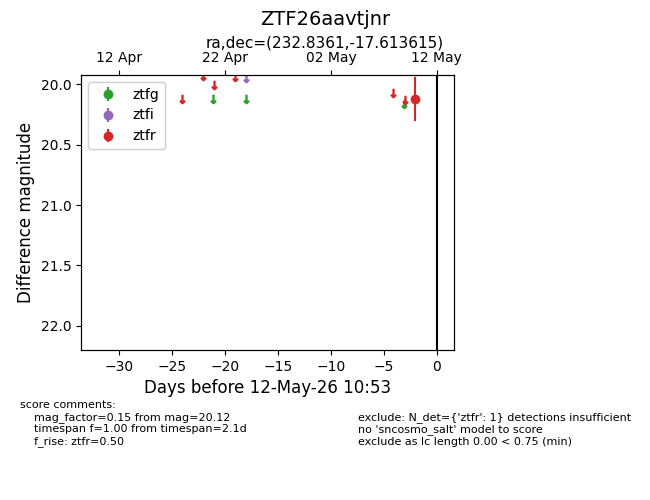
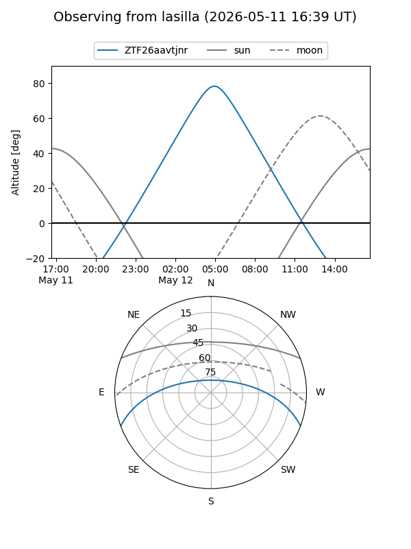
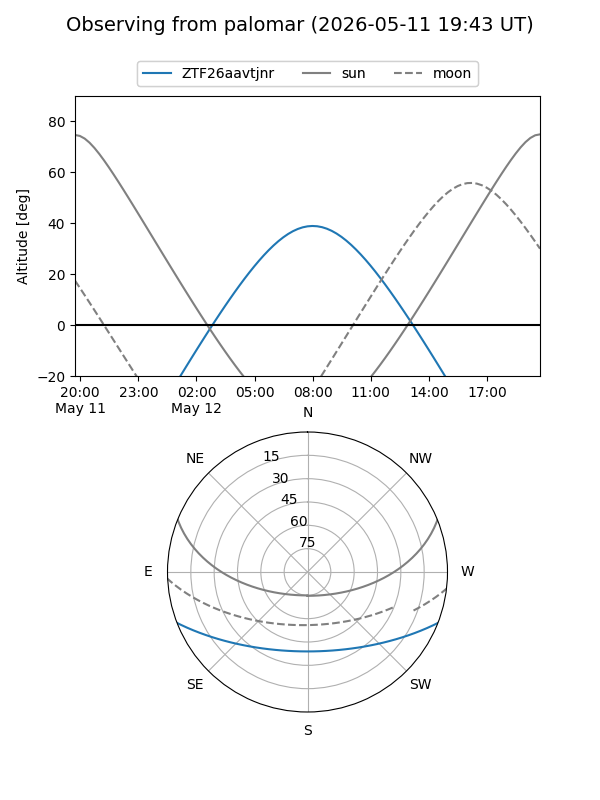

ZTF26aavtjnr
Target ZTF26aavtjnr at 2026-05-12 10:55
Aliases and brokers:
FINK: link
Lasair: link
ALeRCE: link
alt names
ZTF26aavtjnr (ztf,fink_ztf)
Coordinates:
equatorial (ra, dec) = 232.8361,-17.61361
equatorial (HMS+DMS) = 15:31:20.66,-17:36:49.01
galactic (l, b) = (348.4039,+30.80059)
Flags:
Photometry:
last ztfr=20.12
1 ztfr detections
Lightcurve

Visibility


Additional plots